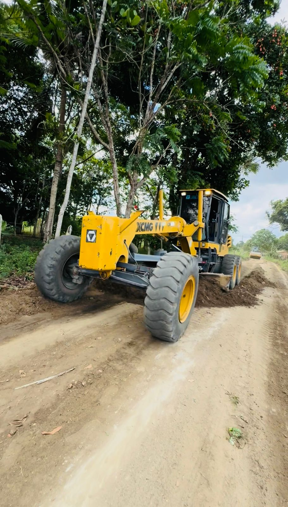

Prefeitura de Cruz das Almas
Contatos
Reclame aqui
Prefeitura de Cruz das Almas
Início
O Município
Serviços on-line
Leis sancionadas
Governo
Prefeito e Vice
Secretarias
Organograma
Serviços ao cidadão
Downloads
Buscar
NOTÍCIAS
Prefeitura de Cruz divulga programação de ações do Março Lilás nos Postos de Saúde

trator
obras
Serviços
PORTAL DA TRANSPARÊNCIA
DIÁRIO OFICIAL
ACESSO À INFORMAÇÃO
PORTAL DO SERVIDOR
NOTA FISCAL ELETRÔNICA
CERTIDÕES NEGATIVAS
AUTENTICAÇÕES
EMISSÃO DE DAM
LICITAÇÕES
CONTRATOS
LEGISLAÇÃO
CONVÊNIOS